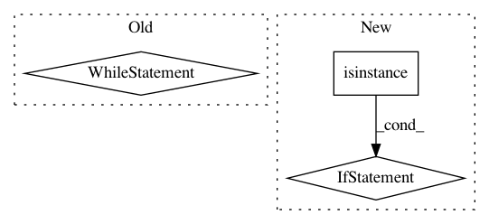

d4a5d09dab446fd9c962c80c87bc7a29f3d8b5cd,python/ray/serve/http_proxy.py,HTTPProxy,__call__,#HTTPProxy#Any#Any#Any#,105
Before Change
)
retries = 0
while retries <= MAX_ACTOR_DEAD_RETRIES:
try:
result = await self.router_handle.enqueue_request.remote(
request_metadata, scope, http_body_bytes)
if not isinstance(result, ray.exceptions.RayActorError):
await Response(result).send(scope, receive, send)
break
logger.warning("Got RayActorError: {}".format(str(result)))
await asyncio.sleep(0.1)
except Exception as e:
error_message = "Internal Error. Traceback: {}.".format(e)
await error_sender(error_message, 500)
break
else:
logger.debug("Maximum actor death retries exceeded")
await error_sender(
"Internal Error. Maximum actor death retries exceeded", 500)
@ray.remote
class HTTPProxyActor:
async def __init__(self, host, port, instance_name=None):
serve.init(name=instance_name)
After Change
result = await self.router.enqueue_request(request_metadata, scope,
http_body_bytes)
if isinstance(result, RayTaskError):
error_message = "Task Error. Traceback: {}.".format(result)
await error_sender(error_message, 500)
else:
await Response(result).send(scope, receive, send)
@ray.remote
class HTTPProxyActor:
async def __init__(self, host, port, instance_name=None):
serve.init(name=instance_name)
In pattern: SUPERPATTERN
Frequency: 3
Non-data size: 3
Instances
Project Name: ray-project/ray
Commit Name: d4a5d09dab446fd9c962c80c87bc7a29f3d8b5cd
Time: 2020-07-10
Author: simon.mo@hey.com
File Name: python/ray/serve/http_proxy.py
Class Name: HTTPProxy
Method Name: __call__
Project Name: keras-team/keras
Commit Name: e24625095a33a5c9a2d016018203938e9bb2ccbf
Time: 2018-04-14
Author: nisargjhaveri@users.noreply.github.com
File Name: keras/backend/cntk_backend.py
Class Name:
Method Name: rnn
Project Name: keras-team/autokeras
Commit Name: 16474aee0c575e615c78d32f2a170c3d7f8f0082
Time: 2017-12-30
Author: jhfjhfj1@gmail.com
File Name: autokeras/graph.py
Class Name: Graph
Method Name: produce_model